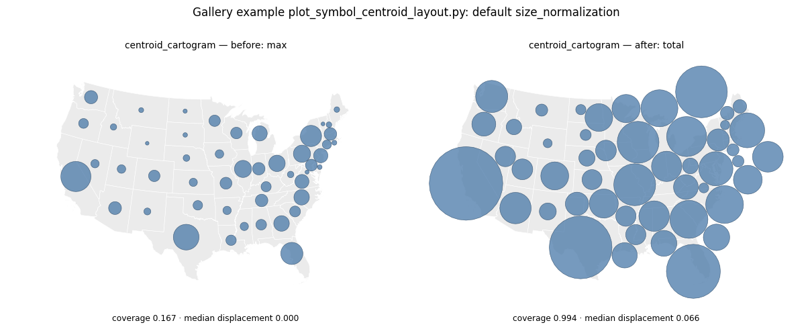
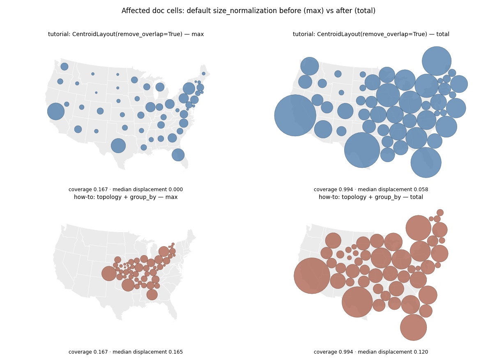
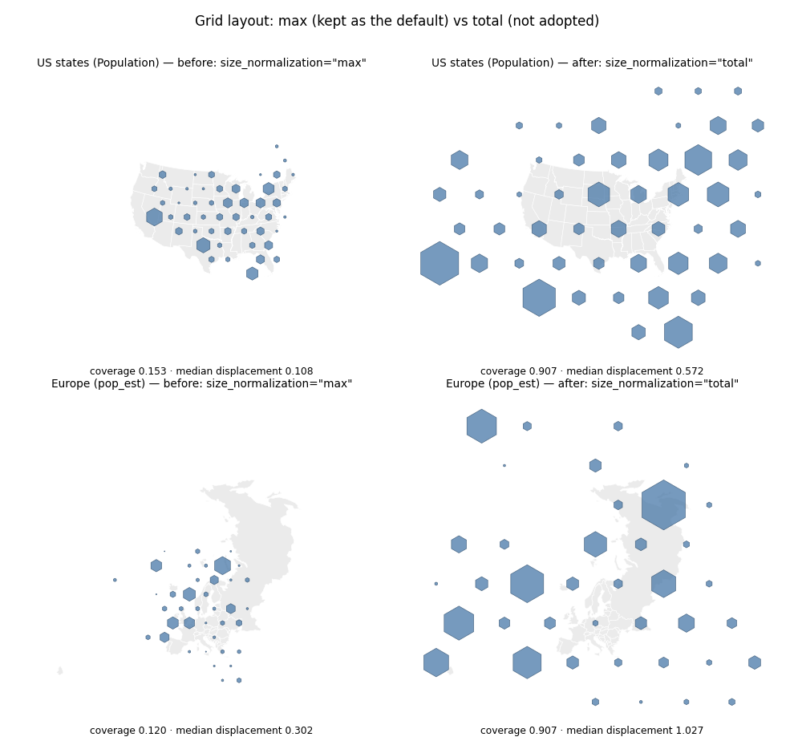
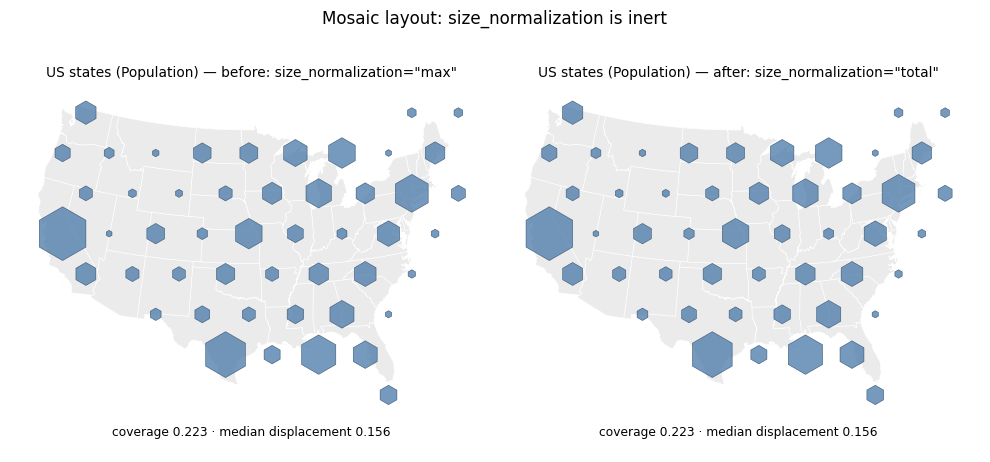
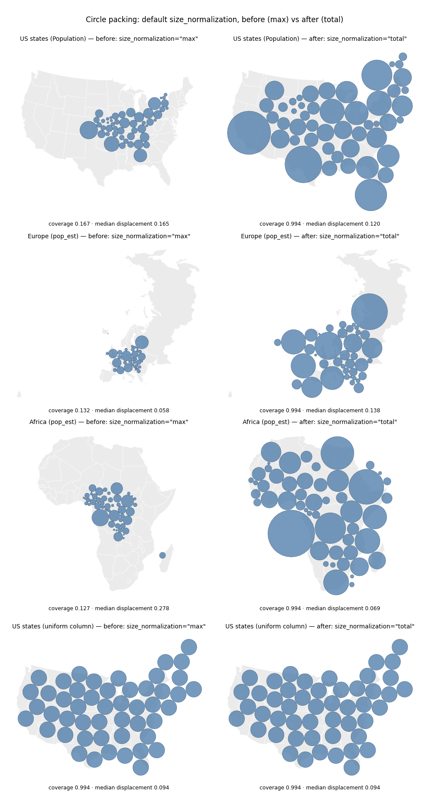

The symbol pipeline now sizes symbols so their total area matches the total geometry area, instead of giving the largest symbol the mean geometry area. Look at how much of each map the symbols cover, and check the uniform-column row, where the two modes must coincide exactly.
Under size_normalization="max" the largest symbol is given an area equal to the mean geometry area. With the default sqrt scale, the symbols then cover exactly mean(value) / max(value) of the total geometry area. The scale of the output is set by the skew of the sizing column, not by anything the caller chose. "total" sets the total symbol area equal to the total geometry area instead, which is the classic Dorling convention.
| Input | coverage before | coverage after | median displacement before | after |
|---|---|---|---|---|
| US states (Population) | 0.167 | 0.994 | 0.165 | 0.120 |
| Europe (pop_est) | 0.132 | 0.994 | 0.058 | 0.138 |
| Africa (pop_est) | 0.127 | 0.994 | 0.278 | 0.069 |
| US states (uniform column) | 0.994 | 0.994 | 0.094 | 0.094 |
Coverage is measured on the rendered symbols, so 0.994 rather than 1.0 — the circle is drawn as a 32-gon. Displacement is the median centroid shift in units of sqrt(total geometry area).
Europe is the one input where displacement gets worse: the larger circles have further to travel before they stop overlapping. The uniform-column row is identical in both columns, as it must be.
| coverage | median displacement | |
|---|---|---|
| before | 0.167 | 0.000 |
| after | 0.994 | 0.066 |
Displacement was zero before because circles that small never overlapped, so stage 1 had nothing to resolve.
| Input | mode | coverage | median displacement | extent vs input | median displacement after removing the scale |
|---|---|---|---|---|---|
| US states | max | 0.153 | 0.108 | 1.05x | 0.095 |
| US states | total | 0.907 | 0.572 | 2.42x | 0.111 |
| Europe | max | 0.120 | 0.302 | 2.11x | 0.090 |
| Europe | total | 0.907 | 1.027 | 5.69x | 0.089 |
The grid layout derives its tile size from the largest symbol, so the mode scales lattice and symbols together. The last column fits a scale and translation before measuring displacement: the arrangement is essentially the same either way. All "total" changes is the absolute scale, which stops the grid lining up with the geography it came from. The grid layout therefore keeps "max", and demers_cartogram and tile_map_cartogram are unchanged.
Symbol areas are identical under both modes (US states: coverage 0.2231, median displacement 0.1558 either way). Each mosaic symbol is scaled to its tile in proportion to the largest symbol, so a single global factor cancels.

The one affected gallery example, plot_symbol_centroid_layout.py, which calls centroid_cartogram without the argument.

The two documentation cells whose output changes: the tutorial's CentroidLayout cell and the tile-count how-to's grouped topology layout. Both read sensibly after.

The grid layout, which keeps "max". The right column shows what "total" would have done: the lattice, calibrated from the largest symbol, is pushed 2.4x (US) and 5.7x (Europe) off the scale of the input geometries while the arrangement stays the same.

The mosaic layout under both modes. The two panels are identical: mosaic symbol scale comes from the tile lattice, so a global size factor cancels.

Circle packing on four inputs. Left column is the old default ("max"), right column the new one ("total"). Both panels of a row share axis limits, so the size change is real and not a zoom. The bottom row is the control: a uniform sizing column, where the two modes are mathematically identical.